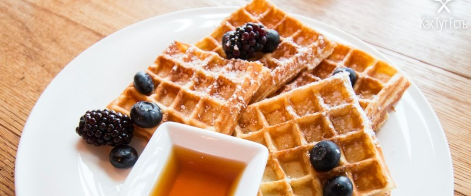

Венские вафли

200 гр. сливочного масла довести до комнатной температуры, растереть масло со 100 гр. сахара, добавить 1 ст. молока и 3 яйца. Затем добавить 330 гр. муки, 2 ч.л. разрыхлителя и 1 ч.л. лимонного сока, все перемешать. Тесто готово!
Разогреть вафельницу, смазать кисточкой с растительным маслом, аккуратно ложкой выложить тесто на вафельницу и выпекать около 5-ти минут до золотистого цвета. Подавать вафли промазанные кремом, джемом, вареной сгущенкой или шоколадной пастой. Можно разрезать на части, можно склеить по две.